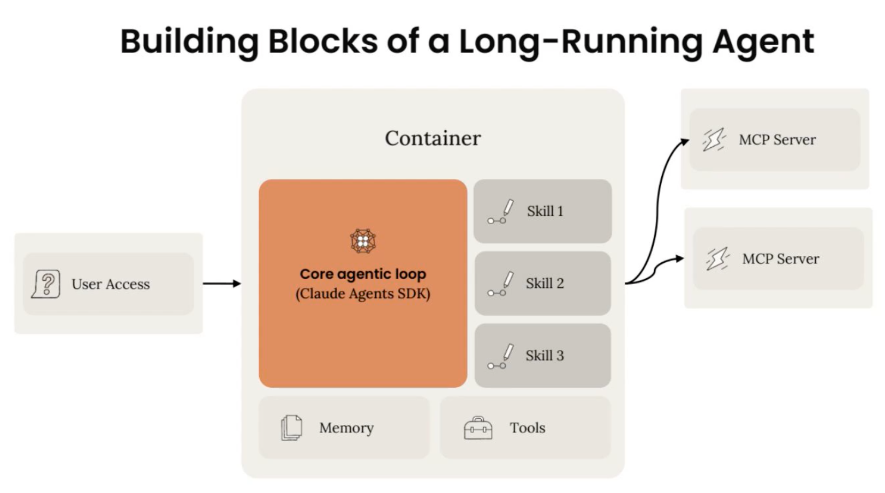

Outtake는 다중 시간 단위로 이어지는 에이전트 세션이 궤도를 벗어나지 않고 공격 네트워크의 작동 방식을 끝까지 파헤치도록 어떻게 붙잡아 두는가.

| 이름 | Outtake |
|---|---|
| 창립 | 2023년 |
| 창립자 | Alex Dhillon(CEO), 이전 Palantir의 문샷(moonshot) 팀 출신 |
| 성장 | 연간 반복 매출(ARR)을 전년 대비 6배, 고객 기반을 10배 이상 늘렸으며, 2025년 한 해에만 2,000만 건 이상의 잠재적 사이버 공격을 스캔 |
아무리 안전장치와 통제가 탄탄해도, 악의적 행위자들은 겉보기엔 무해한 목적 뒤에 AI 사용을 숨겨 진짜 의도를 감출 수 있다. 코드 생성 플랫폼은 그럴듯한 로그인 포털을 만들어 낼 수 있고, 에이전틱 영업(go-to-market) 도구는 피싱 공격의 유포를 뒷받침할 수 있으며, 이미지 생성 기능은 신원을 위조하는 데 쓰일 수 있다. 전통적인 사이버 보안 방어 체계는 이런 속도를 따라잡기 버겁다.
"공격자 입장에서 보면, 지금이야말로 공격을 감행하기 정말 좋은 시기다." AI 사이버 보안 플랫폼 Outtake의 창립자 겸 CEO인 Alex Dhillon의 말이다. "평균적인 공격이 AI 덕분에 더 빨리 실행될 뿐 아니라, AI 덕분에 더 깊숙한 접근 권한까지 확보하게 된다."
Outtake는 디지털 신뢰(digital trust)를 노리는 공격 체인 전체를 하나의 방어선으로 통합한다. AI 에이전트 무리를 동원해, 선도적인 AI 연구소, 대형 헤지펀드, 미국 연방 기관을 포함한 고객들을 겨냥한 위협을 자율적으로 탐지·조사·해체한다.
다음은 Outtake 팀이 최근 Claude Code와 Agent SDK를 이용해 Claude 위에서 장시간 자율적으로 움직이는 사이버 수사관, Recon Agent를 만든 과정이다.
기업을 노릴 때 공격자는 대개 같은 절차를 밟는다. 공개 데이터를 무기화한다 → 그것으로 사칭용 미끼를 만든다 → 내부 시스템을 침투한다. 이 절차는 AI 덕분에 더욱 빨라졌다.
무언가를 뚫기 전에, 공격자는 먼저 조직과 그 임원, 직원에 관해 공개적으로 구할 수 있는 정보를 긁어모은다.
그런 다음 그 정보를 미끼로 바꾼다. 가짜 로그인 페이지가 있는 위조 웹사이트 같은 것으로, 피해자를 속여 자격 증명을 넘기게 만든다. 이런 미끼로 얻은 접근권은 공격자가 경계를 넘어 조직의 가장 값지고 민감한 자산에 도달하도록 돕는다.
이 세 단계 흐름은 예측 가능하지만, 기존 보안 도구는 한 번에 한 조각만 지킨다.
Outtake의 Recon Agent는 사칭 뒤에 숨은 네트워크 전체를 조사한다. 예를 들어 복제된 로그인 페이지 하나를 내리는 데서 그치지 않고, 에이전트는 그 사칭 이벤트에서 증거를 수집하고 분류한다.
이어서 그 단서를 따라가 "고객 지원"을 자처하는 가짜 텔레그램 계정처럼 연결된 인프라를 찾아내고, 이 적대적 네트워크를 그래프로 매핑한다. 에이전트의 마지막 단계는 조사 과정을 설명하는 보고서, 위협 행위자의 프로필, 공격자가 실제로 무엇을 했는지 재구성한 타임라인을 만들어 내는 것이다.
이 정교한 워크플로우를 수행하기 위해 Recon Agent는 코드를 읽고, 쓰고, 실행할 수 있다. 심지어 악성 로그인 페이지와 직접 상호작용해 훔친 자격 증명이 실제로 어디로 흘러가는지 확인할 수도 있다.
이런 조사는 에이전트가 오랜 시간 자율적으로 실행되기를 요구하는 경우가 많다. 에이전트 세션은 중앙값 기준 16분이지만, 흔히 한 시간을 넘어 늘어나기도 한다. 지금까지 가장 길었던 실행은 결과를 내놓기까지 두 시간 동안 에이전틱 작업이 이어졌다.
Outtake는 대략 네 단계를 거쳐 Recon Agent를 만들었다. 각 단계는 좋은 조사가 어떤 모습인지를 이해한 뒤, 그 판단을 점진적으로 에이전트에게 넘기는 과정이었다.
에이전트의 어떤 부분도 만들기 전에, Outtake의 엔지니어들은 직접 실제 사이버 조사를 수행하고 고객 및 디자인 파트너로부터 도메인 전문성을 끌어냈다.
목표는 "좋은 것"이 어떤 모습인지 정의하는 일이었다. 이런 유형의 조사에서 그것은 곧 어떤 증거가 중요한지, 그것을 어떻게 정리해야 하는지, 실행 가능한 결론과 단순한 추측을 가르는 기준이 무엇인지 파악한다는 뜻이었다. 그 기준은 이후 모든 단계에서 돌아가 견주어 보는 고정된 준거점이 되었다.
"장시간 실행되는 에이전트를 만들 때 가장 중요한 것은 좋은 것이 어떤 모습인지, 에이전트가 무엇을 해야 하는지를 정말로 이해하는 것"이라고 Outtake의 에이전트 플랫폼 엔지니어링 리드인 Jack Hayford는 말한다. "왜냐하면 결국 여러분은 에이전트가 매번 그 일을 해낼 수 있도록 보장하는 것이기 때문이다."
처음에 Outtake 팀은 전통적인 에이전트 프레임워크를 이용해, 그들이 표준화하던 조사를 점진적으로 자동화했다.
하지만 곧 Recon Agent가 단순한 수사관에 그칠 수 없다는 걸 깨달았다. 코드를 쓰고, 실행하고, 즉석에서 도구를 만들고, 실제로 악성 도메인과 상호작용해야 했다.
"모든 조사는 서로 다르고, 깊이 기술적이다." Hayford의 말이다. "에이전트에게는 코딩 근력과 역량이 필요했고, Claude Code는 그런 가정을 실제로 검증하고 점점 더 많이 실험해 볼 수 있는 강력한 초기 하니스(harness)였다."
Claude Code로 프로토타입을 만들면서 팀은 핵심 설계 원칙을 벼려냈다. 오케스트레이션 계층에서는 에이전트를 빡빡하게 제약하되('도메인을 조사할 때는 항상 X, Y, Z를 하라'), 판단이 필요한 순간에는 자유롭게 즉흥적으로 움직이도록 놓아두는 것이다.
"Claude Code가 도입한 패턴들이 정말 마음에 들었지만, 더 낮은 수준의 프리미티브에 대한 추가 접근이 필요했다. 그걸 직접 만들고 싶지는 않았다." Hayford의 말이다.
Recon Agent를 프로덕션으로 옮기는 다음 단계로 Claude Agent SDK를 쓰는 것은 자연스러운 선택이었다. Claude Code에서 익힌 스킬과 패턴을 그대로 가져왔기에 팀은 속도를 잃지 않으면서도, 에이전트 루프와 세션 처리를 처음부터 다시 만들지 않고도 Recon Agent의 메모리, 맥락, 파일 시스템에 대한 더 촘촘한 제어권을 얻었다.
저렴하고 즉각적으로 반복할 수 있는 능력은 사이버 보안 분야에서 특히 결정적이다. 공격자는 방어 도구가 존재한다는 걸 알아채는 순간 바로 적응하기 때문이다. 팀은 처음부터 에이전트 평가를 통합했고, 여러 시나리오를 한 번에 돌리는 탄탄한 평가 스위트를 갖추게 됐다. 이 덕분에 모델 업그레이드나 메모리 시스템 전면 개편처럼 광범위한 변경도 안전하고 자신 있게 밀어붙일 수 있었다.
이는 또한 팀 스스로를 에이전틱 루프 바깥으로 빼낼 수 있게 해 줬다. 가령 Recon Agent가 조사를 마치고 자신에게 없던 어떤 도구가 있었다면 더 잘할 수 있었을 거라고 보고하면, 별도의 코딩 에이전트가 그 제안을 읽고 새 도구를 작성한 뒤 그것을 시험해 볼 테스트 시나리오까지 만든다.
사람은 맨 마지막에 가서야 개입해 결과를 살펴본다. 그 도구를 갖추고 나니 에이전트가 조사를 더 잘 해냈는가, 아닌가? "우리가 병목이다. 이렇게 길고 복잡한 에이전트를 만들 때는 피드백 루프가 자동화돼 있는 게 매우 중요하다. 훨씬 빠르고, 개발자로서도 훨씬 만족스럽다." Hayford의 말이다.
에이전트 초창기에는 개발자들이 에이전트의 행동을 미리 스크립트로 짜서, 하드코딩된 결정론적 단계별 경로로 궤도 이탈을 막았다. 이제는 정교한 워크플로우가 하니스—메모리, 도구, 스킬, 가드레일로 이뤄진 든든한 환경—로 대체되고 있다.
다음은 Outtake 팀이 Recon Agent를 만들며 얻은 몇 가지 교훈이다.
파일 시스템은 압축(compaction)을 견디고 살아남는 메모리를 가능하게 한다. 에이전트에게는 흔히 매우 구체적이고 세밀한 도구가 주어지지만, 파일 시스템과 함께 코드를 쓰고 읽고 실행할 수 있는 능력을 주면 에이전트가 장애물에 스스로 대응하는 데 도움이 된다.
"그런 극도로 강력하고 개방형(open-ended)인 도구와 역량을 에이전트에게 넘기는 것은 큰 도약이다. 네트워크 문제 같은 것 때문에 도구가 실패했는데도, 에이전트가 알아서 올바른 우회 방법을 찾아 계속 진행하는 경우를 여러 번 봤다." Hayford의 말이다. "우리가 만든 나머지 하니스가 충분히 탄탄했고, 이 강력하고 개방형인 도구들로 즉흥적으로 움직일 여지를 에이전트에게 남겨 뒀기 때문에, 결국 성공적인 결과에 도달할 수 있었다."
프롬프트는 필요할 때 유연성을 주지만, 가능한 한 하드코딩하는 편이 안정성을 보장한다. "시간이 지나며 복잡해지는 이런 장시간 에이전트를 만들 때, 프롬프트는 그저 제안일 뿐이다." Hayford의 말이다. "에이전트가 원하는 대로 하지 않을 때, 자연스러운 반응은 에이전트에서 가장 유연한(plastic) 부분에 뭔가를 덧붙이는 것이다. 시스템 프롬프트에 'X가 일어나면 반드시 Y를 하라'를 슬쩍 끼워 넣으면 처음엔 통할 수 있지만, 이 에이전트가 더 오래 실행될수록 그 프롬프트 속 단어 하나하나는 결국 대부분 무시당하게 된다."
올바른 접근은 그럴 가능성을 염두에 두고 설계하는 것이다. 에이전트가 매번 반드시 해야 할 일이 무엇인지 파악해 그것을 에이전트 가드레일의 일부로 만들어라. "그런 것들을 프롬프트 밖으로 꺼내 하니스 안으로 집어넣어라." 그의 말이다. "그러면 에이전트는 더 이상 그걸 생각할 필요가 없어지고, 정말로 잘해낼 수 있는 영역에 더 많은 맥락 공간과 주의를 쏟을 수 있다."
Claude를 지시하는 모범 사례와, 각 방법의 맥락 비용 및 권위에 관해 더 읽어 보라.
수작업 "성찰(reflection)"을 개발 주기를 단축하는 자동화된 평가로 가는 로드맵으로 삼아라. 흔한 통념은 평가가 신뢰성을 위한 품질 관문이라는 것이다. 하지만 장시간 실행 에이전트에서는 더 큰 보상이 속도에서 나온다.
초기에는 Recon Agent가 실행될 때마다 팀이 수작업으로 성능을 검토했다. 하지만 에이전트가 한 모든 일이 담긴 30분짜리 기록(transcript)을 읽는 일은 고역이고 확장되지 않는다.
"현대적인 에이전트 개발에서 결과물을 평가하는 일이 전체 루프에서 가장 비용이 큰 단계다." Jack의 말이다.
평가란 그저 그 성찰을 구조화하고, 채점 가능하고, 자동화 가능한 형태로 만든 것일 뿐이다. 일단 좋은 것이 무엇인지를 반복 가능한 점검표로 코드화하고 나면, 에이전트를 심판 자리에 앉혀 30분짜리 기록을 읽고 그 실행을 채점하게 할 수 있다.
"일부 엔지니어들은 평가를 만드는 일에 부담을 느끼는 것 같다. 완벽한 사례를 만들어야 한다는 생각 때문이다." Jack의 말이다. "얼마나 공식적이든, '완벽'하든 아니든 상관없이 처음부터 평가의 어떤 버전이라도 만들어 두면 그 에이전트를 더 빨리 만들 수 있다."
프롬프트 인젝션은 실재하는 위협이다. 그래서 에이전트를 샌드박스에 넣거나 갑옷을 입히는 일이 필수적이다. Outtake 팀이 Claude를 택한 이유 중 하나는 프롬프트 인젝션에 대한 강한 저항력이었다.
"보안은 Recon Agent를 만드는 데 있어 우리에게 큰 화두다." Hayford의 말이다. "우리는 에이전트에게 파일 시스템과 bash를 주고 그걸 적대적인 환경으로 보내고 있다. 그래서 가장 중요하게 풀어야 했던 문제는 일종의 블래스트박스(blastbox)—에이전트를 무력화하지 않으면서도 민감한 내부 요소로부터 숨길 수 있는 상자—를 만드는 것이었다."
그들의 접근 방식은 에이전트가 탈취당할 수 있다는 가정에서 출발한다. 그래서 주변 시스템은 피해를 억제하도록 설계된다. 다만 보안은 에이전트마다 목적에 따라 다르게 생겼고, 모든 에이전트가 블래스트박스의 대상이 되는 것은 아니다.
Outtake는 이제 에이전트가 인터넷에 손을 뻗는 바로 그 지점에서 신뢰 수준을 채점하고 있다. 에이전트가 접촉하려는 대상이 무엇이든 평가하는 체크포인트를 두는 것이다. '이 페이지는 사칭인가? 멀웨어인가? 지금 이 순간 에이전트에 프롬프트 인젝션을 시도하고 있는가?' 이것이야말로 점점 더 적대적으로 변해 가는 인터넷을 가로지르는 에이전트에게 정확히 필요한 갑옷일지도 모른다.
"좋은 것"이 어떤 모습인지 알고 있는가?
먼저 에이전트가 되어 보라. 실제 작업을 직접 수행하고 고객 및 디자인 파트너로부터 도메인 전문성을 끌어내, 이후 모든 반복을 견줄 고정된 기준을 갖춰라.
복잡성 하나하나가 그만한 값어치를 하는가?
가장 단순하게 작동하는 버전을 찾아 조금씩 자동화하라. 결과가 그것을 정당화할 때만 복잡성을 더하라. 전통적인 소프트웨어와 같은 규율이다.
하니스가 작업량에 맞게 갖춰졌는가?
Claude Code에서 빠르게 가정을 검증한 뒤, 메모리·맥락·세션에 대한 더 낮은 수준의 제어가 필요해지면 Agent SDK로 넘어가라. 에이전트 루프를 직접 다시 만들지 마라.
에이전트를 어디서 제약해야 하는가?
오케스트레이션 계층에서는 가드레일을 하드코딩하되, 그 제약이 낮은 수준의 판단 영역까지 침범하게 두지 마라. 즉흥적으로 움직일 수 있는 공간이야말로 최선의 결과가 나오는 곳이다.
Recon Agent는 지금 실제로 가동되며 조사를 수행하고 있다. Outtake가 Claude를 이용해 적대적 인프라를 대규모로 매핑하는 방식을 더 깊이 알고 싶다면 다음을 참고하라.